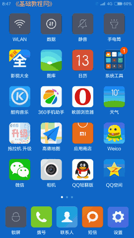
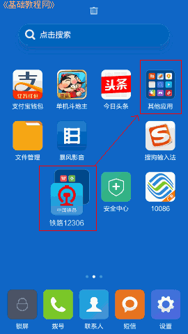
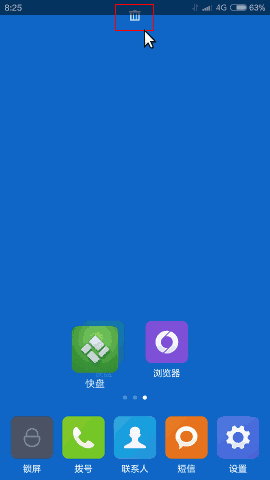
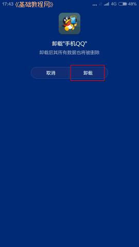
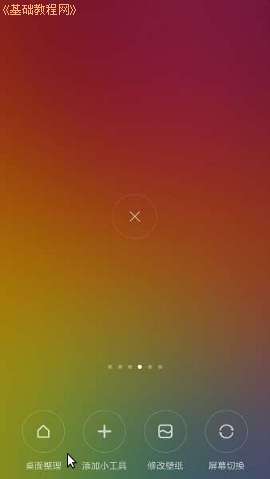
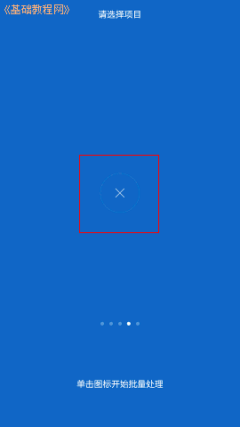
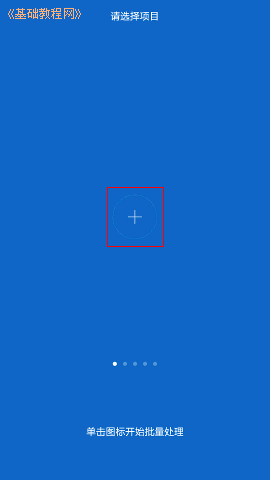

小米4手机操作指南玩家手册
作者：TeliuTe 来源：基础教程网
四、清理桌面图标 返回目录 下一课屏幕上图标太多太乱，可以整理一下，不用的屏幕也可以删除，或者再添加一个；
1、清理桌面图标
1）手指轻轻按住一个图标不松，稍等图标会跳动一下，这时可以拖动图标移动位置；

2）把图标拖到另一个图标上，会自动建立一个文件夹，里面包含这两个图标，还可以拖入其他图标；

3）按住一个图标后，屏幕上边会出现回收站图标，拖过去会提示卸载程序，自带的程序不显示删除图标；
 
4）把图标拖到屏幕左边缘或右边缘，可以移动图标到旁边的桌面，
或者一个手指拖动图标到边缘后，另一个手指向左边或右边划一下屏幕，将图标移到另一个桌面；
5）桌面太多，可以删除空的，在空桌面长按住手机左下角的主菜单按钮，屏幕底部就会弹出桌面工具按钮；

6）点按第一个“整理桌面”，滑动屏幕到空的桌面，点按屏幕中间的叉按钮，可以删除当前这个桌面；

7）在最前面的空白桌面下方，点按加号可以增加一个新的桌面，也就是下边会多一个点；

8）在桌面屏幕空白处，两个指头在屏幕上捏合，也可以调出整理桌面工具选项；
本节学习了整理桌面图标的基础知识，如果你成功地完成了练习，请继续学习下一课内容；
本教程由86团学校TeliuTe制作|著作权所有
基础教程网：http://teliute.org/
美丽的校园……
转载和引用本站内容，请保留作者和本站链接。